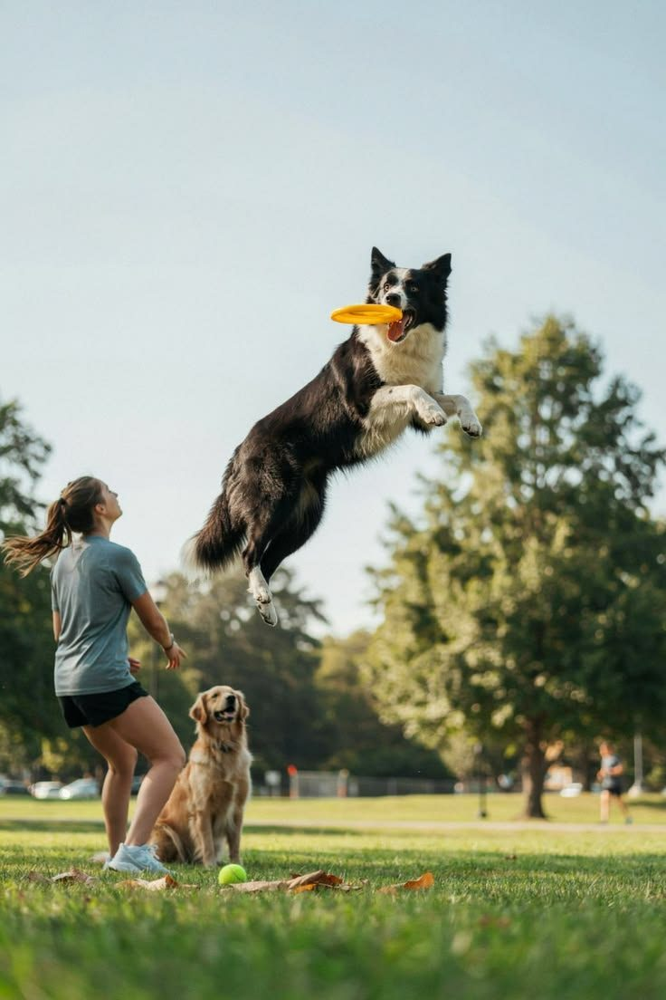
Chuť na loptičku. Každý deň.
Konkrétne mäso ako hlavný zdroj bielkovín, 24 až 32 % podľa veku a pohybu. Aby mal tvoj pes z čoho stavať svaly.
Prémiové granule z diviny a slovenského hovädzieho, vybrané presne podľa veku, váhy a temperamentu tvojho psa. Pre dlhý a nabehaný život.
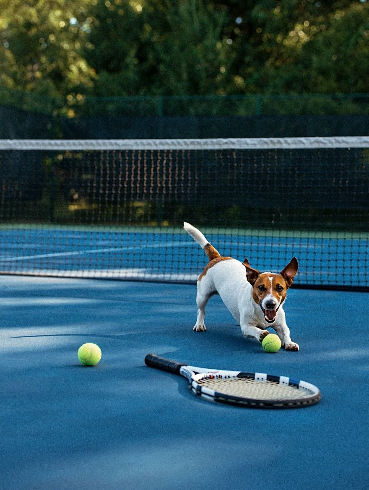

Konkrétne mäso ako hlavný zdroj bielkovín, 24 až 32 % podľa veku a pohybu. Aby mal tvoj pes z čoho stavať svaly.
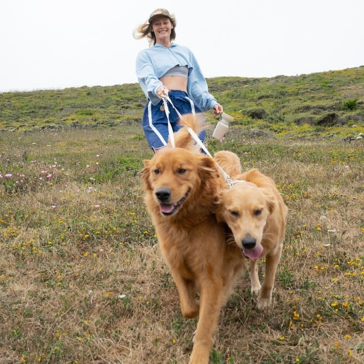
Hliva ustricová, tanín z jedlého gaštana, ľanový olej a konopná múka. Suroviny, ktoré na bežnej etikete nenájdeš.
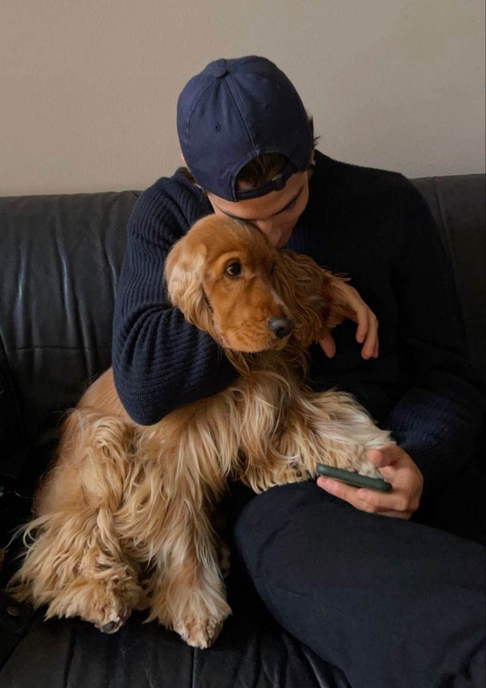
Kolagén, chondroitín a glukozamín pre kĺby a dávka presne na váhu tvojho psa. Aby ste spolu chodili čo najdlhšie.
Toľko dlhšie žijú psy, ktoré držia ideálnu váhu.
Kealy a kol., JAVMA, 2002
Preto dávku nerátame od oka, ale na gramy.
Žiadne „mäso a mäsové deriváty“. Ktoré mäso dostane tvoj pes, vyberieme podľa toho, kto je.
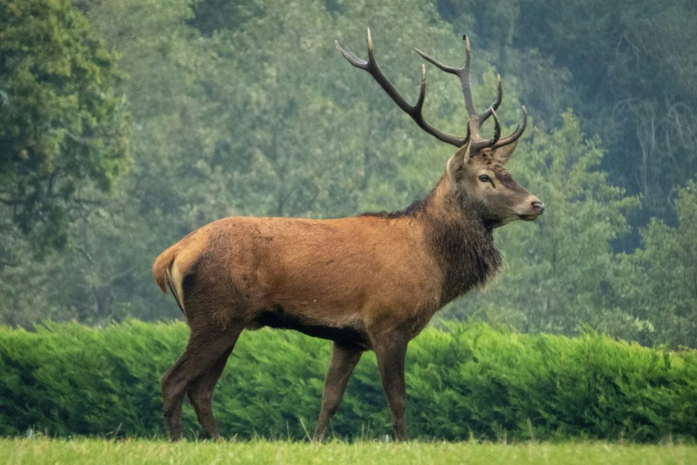
Z lesaDivina z lesa. Chudé, výrazné mäso s jediným zdrojom bielkovín.
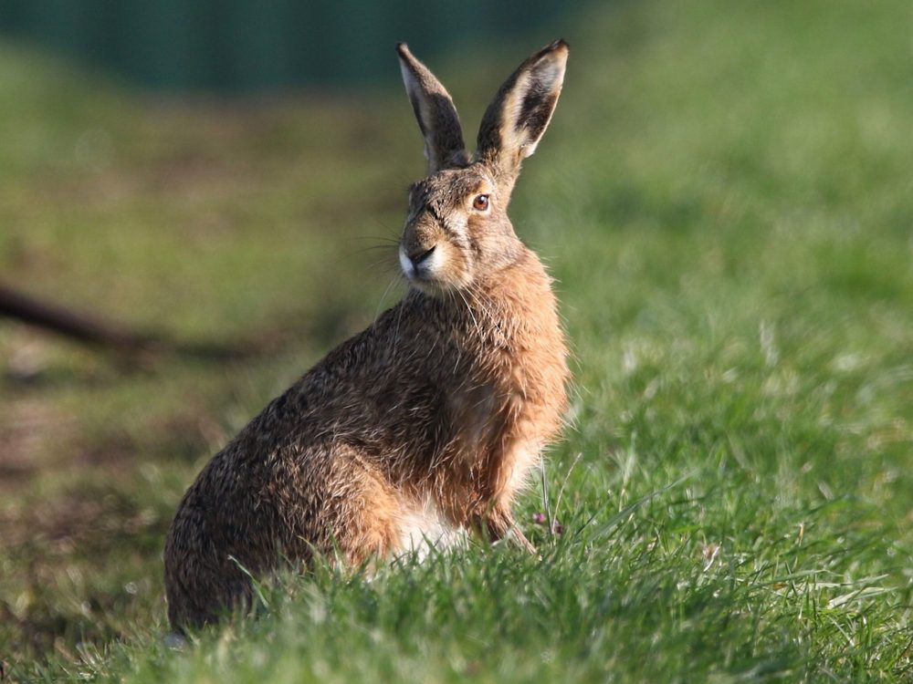
Z lúkyJemné, ľahké biele mäso pre citlivé bruchá.
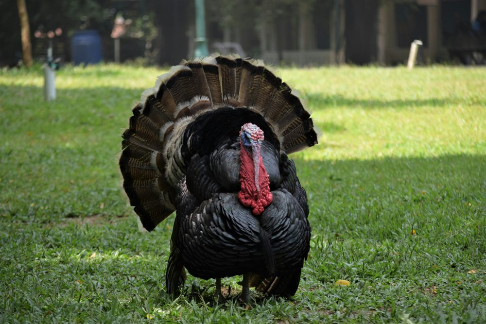
Z dvoraChudá hydina plná bielkovín.
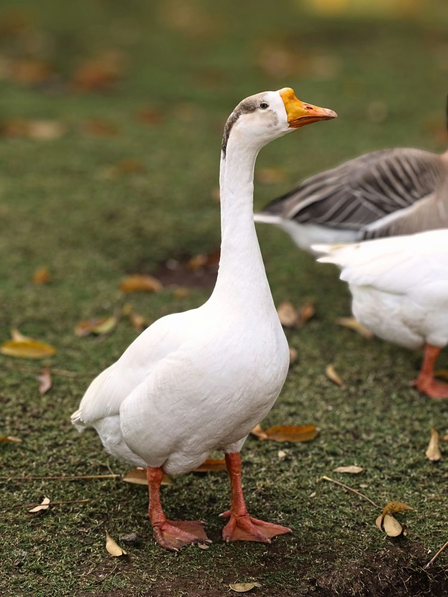
Z dvoraPlnšia chuť hydiny, ktorú psy milujú.
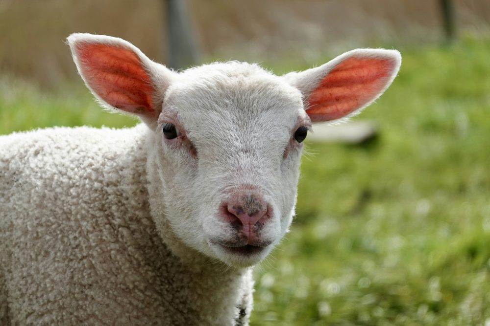
Z pastvyPre psov, ktorým nesedí každé mäso.
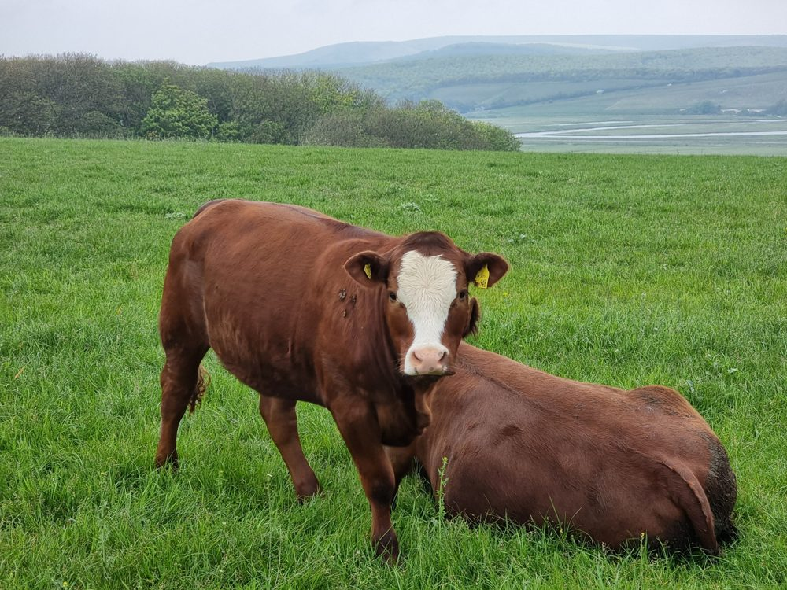
Zo SlovenskaSlovenské hovädzie. Klasika plná bielkovín.
Suroviny, ktoré na bežnej etikete nenájdeš.
Plemeno, vek, váha, postava a koľko sa hýbe. Dve minúty.
Granule s mäsom, ktoré tvojmu psovi sedí, a dávku spočítame na gramy.
Až k tebe domov. Skôr, než sa to staré minie.
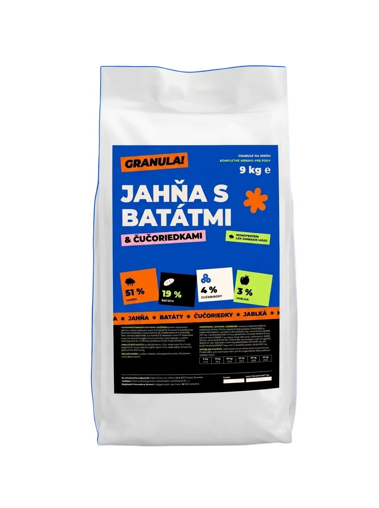
Granule aj dávku vyberieme pre jedného konkrétneho psa. A keďže vieme, koľko denne zje, ďalšie vrecko pošleme skôr, než miska zostane prázdna.
V našich granulách: nula pšenice, nula kukurice, nula sóje, nula hrachu a strukovín, nula kuracieho mäsa, nula kuracieho tuku, nula mäsovej múčky, nula pridaného cukru, nula palmového oleja, nula umelých farbív, nula umelých konzervantov, nula umelých aróm, nula GMO.
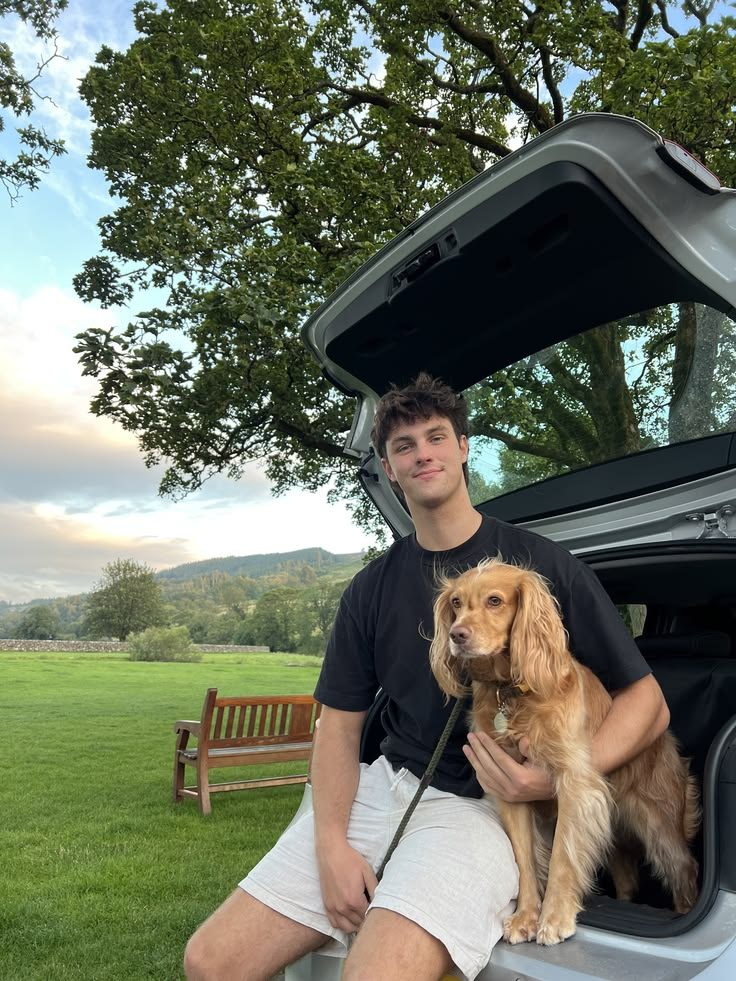
★★★★★„Prvé granule, pri ktorých nevyberá. Miska je prázdna skôr, než si stihnem obuť topánky.“
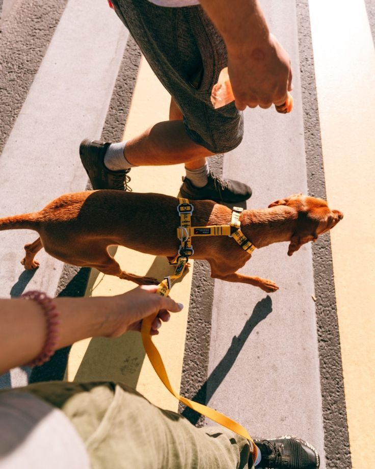
★★★★★„Pri vyžle sledujeme každý gram. Dávka na gramy konečne sedí a váha sa ustálila.“
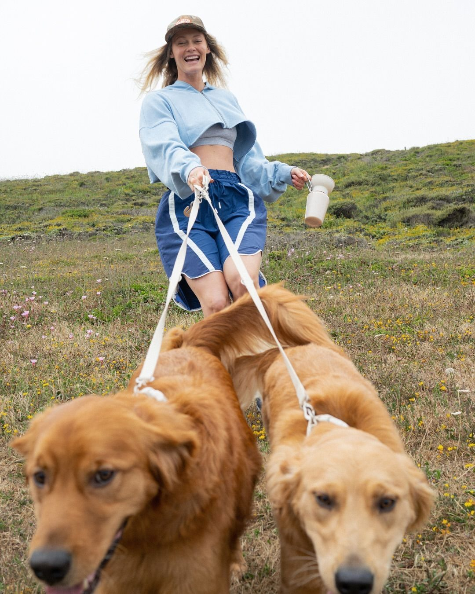
★★★★★„Dva psy, dvoje granule, jedno doručenie. Srsť sa leskne a vrecko nestrážim.“
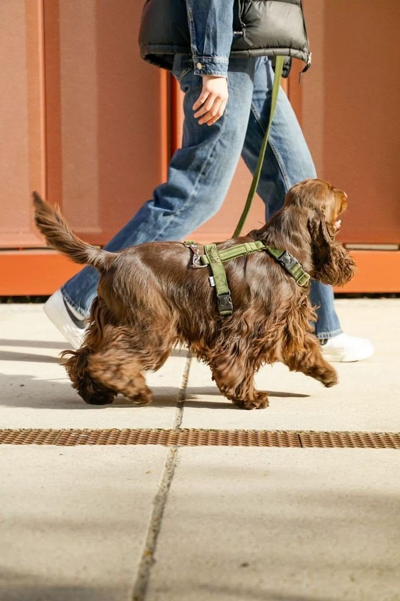
★★★★★„Citlivé brucho a roky skúšania. S jahňacími granulami máme pokoj už tretí mesiac.“
„Najčastejšia chyba, ktorú vidím v ambulancii, je dávka od oka. Krmivo odvážené na konkrétneho psa je najjednoduchšia prevencia nadváhy.“
„Pes, ktorý má energiu na celý tréning a pritom nie je ťažký, sa učí rýchlejšie. Na tom, čo je v miske, sa to pozná.“
„Pri športových psoch riešim každú surovinu. Konkrétne mäso namiesto mäsových derivátov je pre mňa základ.“
Z plemena, veku, váhy, postavy a pohybu tvojho psa. Granule vyberieme podľa odporúčaní, ktoré vznikli s veterinármi, a dávku spočítame na gramy.
Granule aj dávka sedia konkrétnemu psovi, nie „priemernému psovi“ z tabuľky na vrecku.
Podľa toho, koľko denne zje. Ďalšie pošleme tak, aby prišlo skôr, než sa to staré minie.
Postupne. Približne 7 až 10 dní pridávaj do starého krmiva čoraz viac Granuly, kým nezostane len ona.
Slovenský výrobca krmív, ktorý sa im venuje od roku 1992. Receptúry navrhli veterinári so zameraním na výživu psov.
Povedz nám o ňom za dve minúty. Granule aj dávku vyberieme my a vrecko príde samo.
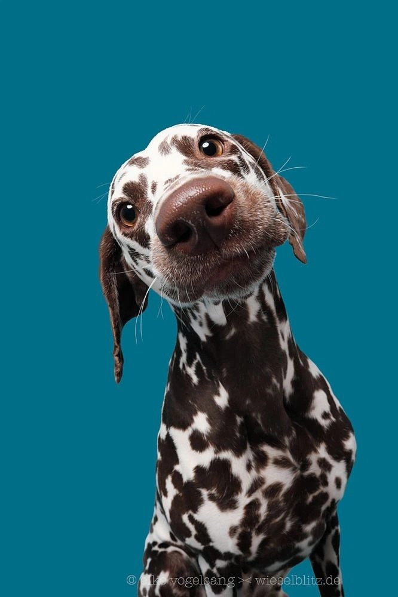